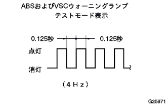
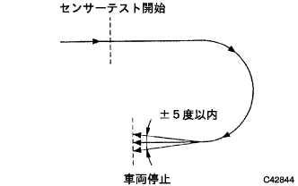

ABS & TRC & VSC & BA system test mode with EBD |
Test mode How to start
OFF the IG switch and connect SST (Tascan) to DLC3.
Make a shift lever P range.
Turn on the IG switch and switch to test mode according to the SST (Tascan) display screen.
Test mode display confirmation
|  |
When the test mode starts, the ABS and VSC Warnin Gramp displays test mode.
Joylete sensor & G sensor 0 check
Make the shift lever in the P range with IG switch ON and stop for 2 seconds or more in a flat place.
Yorate sensor output check
|  |
Make a 180 ° turning run without wheel spinning.
When the shift lever is made in the P range, the buzzer sounds for 3 seconds and confirms that the sensor chak has ended.
Master cylinder pressure sensor chaeck
After opening the brake pedal for more than 1 second while stopping the vehicle, confirm that the ABS Warnin Grand Lamp lights up for 3 seconds when stepping on the pedal with a step force of 98n {10kgf} or more.
Speed sensor chak
Start without wheel spinning on the handle straight, speed up to 45km/h or higher, and confirm that the ABS Warnin Grand Lamp will turn off.
End of sensor chak
If the sensor chaeck is finished successfully, the ABS Warning Lamp lit state will blink during the vehicle stop (test mode display) and turn off during vehicle driving.
Sensor chakcode and diagnostic cord check
Use SST (Tascan) to check the output of sensoracheck code and diagnostic cord.
Test mode termination method
Switch from test mode to normal mode according to the SST (Tascan) screen display.
Turn off the IG switch and remove the SST (Tascan).
| Code number [SAE] lamp | Diagnosis contents [terminal symbol] | Judgment content | Inspection item |
|---|---|---|---|
| [C1271] 71 | Front right speed sensor output voltage abnormality [FR+, FR-] | Judgment of foreign substances, gaps between the sensor and the rotor |
|
| [C1272] 72 | Front left speed sensor output voltage abnormality [FL+, FL-] | Judgment of foreign substances, gaps between the sensor and the rotor |
|
| [C1273] 73 | Rear right speed sensor output voltage abnormality [RR+, RR-] | Judgment of foreign substances, gaps between the sensor and the rotor |
|
| [C1274] 74 | Rear left speed sensor output voltage abnormality [RL+, RL-] | Judgment of foreign substances, gaps between the sensor and the rotor |
|
| [C1275] 75 | Front right speed sensor output period abnormal [FR+, FR-] | Judgment of stability of sensor input waveform |
|
| [C1276] 76 | Front left speed sensor output period abnormal [FL+, FL-] | Judgment of stability of sensor input waveform |
|
| [C1277] 77 | Right-right speed sensor output cycle [RR+, RR-] | Judgment of stability of sensor input waveform |
|
| [C1278] 78 | Rear left speed sensor output cycle [RL+, RL-] | Judgment of stability of sensor input waveform |
|
| [C1279] 79 | Deselation sensor (G sensor) abnormality [GL1, GL2] | Judge the output voltage of the deceleration Denser in the iodide sensor |
|
| [C1281] 81 | Master cylinder pressure sensor output abnormality [VCM, PMC] |
|
|
| Code number [SAE] lamp | Diagnosis contents [terminal symbol] | Judgment content | Inspection item |
|---|---|---|---|
| [C0371] 71 | York rate sensor output abnormality [YAW, GYAW, YD] |
|
|